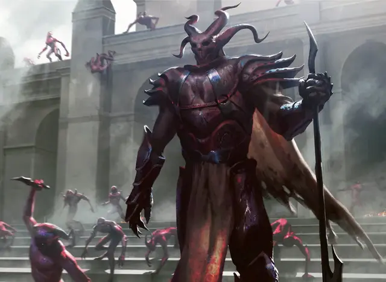

Мастер жестокости
Master of Cruelties
Большое Исчадие (Демон), хаотично-злое

Класс Доспеха 18 (латы)
Хиты 127 (15к10 + 45)
Скорость 30 футов
| мод | спас | ||
|---|---|---|---|
| СИЛ | 18 | +4 | +4 |
| ЛОВ | 17 | +3 | +3 |
| ТЕЛ | 16 | +3 | +7 |
| мод | спас | ||
|---|---|---|---|
| ИНТ | 19 | +4 | +8 |
| МДР | 16 | +3 | +7 |
| ХАР | 21 | +5 | +9 |
Навыки Выступление +9, Запугивание +9, Обман +9, Убеждение +9
Сопротивление урону огонь, холод, электричество; дробящий, колющий, рубящий от немагических атак
Иммунитет к урону яд
Иммунитет к состояниям отравление
Чувства истинное зрение 120 футов, пассивное Восприятие 13
Языки Общий, Бездны, Телепатия 120 фт.
Опасность 9 (5000 опыта)
Бонус мастерства +4
Особенности
Аура кровожадности. Когда любое другое существо начинает свой ход в пределах 30 футов от мастера, это существо должно преуспеть в спасброске Мудрости Сл 17 или оно будет обязано немедленно совершить действие Атака, совершив одну рукопашную атаку против случайного существа в пределах досягаемости. Если в пределах досягаемости нет существ, он совершает дальнобойную атаку против случайного существа в пределах дистанции, при необходимости метая своё оружие.
Кормление толпой. Каждый раз, когда в пределах 60 футов от мастера умирает существо, мастер получает 15 временных хитов и совершает с преимуществом все броски атаки, проверки характеристик и спасброски до конца своего следующего хода.
Врождённое колдовство. Врожденной базовой характеристикой мастера является Харизма (Сл спасброска от заклинания 17). Мастер может накладывать следующие заклинания, без предоставления материальных компонентов:
• Неограниченно: очарование личности [charm person] (как заклинание 3-го уровня), корона безумия [crown of madness]
• 1/день: подчинение личности [dominate person]
Сопротивление магии. Мастер совершает с преимуществом спасброски от заклинаний и других магических эффектов.
Действия
Мультиатака. Мастер совершает две рукопашные атаки своим копьем.
Копьё. . Рукопашная или дальнобойная атака оружием: +8 к попаданию, досягаемость 5 футов или дистанция 20/60 футов, одна цель. Попадание: 11 (2к6 + 4) колющего урона или 13 (2к8 + 4) колющего урона, если используется двумя руками, плюс 13 (3к8) урона психической энергией.
Пленительное присутствие (перезарядка 6). Каждое существо в пределах 120 футов от мастера должно преуспеть в спасброске Мудрости Сл 17, иначе будет очаровано мастером на 1 час. Пока очаровано таким образом, скорость существа равна 0. Если очарованное существо получает урон, оно может повторить спасбросок, оканчивая эффект на себе в случае успеха. Цель, преуспевшая в спасброске, получает иммунитет к «Пленительному присутствию» всех мастеров жестокости на следующие 24 часа.
Описание
Когда мастер жестокости выступает в роли зачинщика шоу Ракдосов, зрители могут быть уверены в представлении, которое они запомнят на всю оставшуюся жизнь, каким бы коротким оно ни было.
Завораживающее присутствие мастера жестокости привлекает всеобщее внимание к демону и приковывает к себе всё внимание аудитории. С каждым актом развратной муки демона зрители всё больше и больше вовлекаются в жажду крови. Зрители требуют большего насилия, и те, кто слишком увлечён весельем, чувствуют себя обязанными принять участие в беспорядочных убийствах.